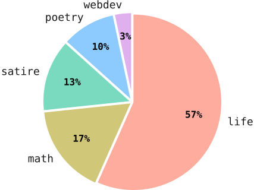

We Have Inkhaven at Home
A friend of mine is going to this big fancy retreat called Inkhaven where you write one blog post a day. And I was like "I can't do that, but I'll sure as hell try!". I don't want to spam this blog, so I'll link my daily posts down here and I'll add the best ones to the main feed later after some polish.
- April 1st - How to Leverage Effective Altruists to Fix Housing Prices in the Bay Area - MoreWrong
April 2nd - Animal Welfare is a Culinary Problem
Animal Welfare is a Culinary Problem
I agree with the vegans. Factory farming is horrific. I don't need another documentary. I'm convinced.
I had chicken last week.
Not because I watched it get its beak cut off and felt nothing, but because I was sick with the man flu and I wanted a comforting microwave meal, and butter chicken was all I could find.
Most restaurants have one vegetarian option that only exists so they can say they tried. If you're a normal person who wants to eat with friends, well fuck you, you're eating fries.
I cook a real meal once a day. Sometimes zero. I drink a premade protein shake instead. These shakes are load-bearing to my quality of life.
My body hates the obvious solution
The first thing anyone suggests when you try to eat less meat is legumes. Cheap, nutritious, available.
They also make me fart.
I've tried soaking them overnight. I've tried "just push through it, your gut adapts." My gut did not adapt. I also tried soylent, the only decent vegan meal replacement shake. Similar results. Worse than the beans actually.
Next time someone tells you they could never go vegan, send them a recipe.
The greatest impact I've had on animal welfare is telling people that msg makes tofu taste good. The person who's influenced me the most isn't an activist, it's this guy on YouTube who figured out how to make vegan bacon out of rice paper.
Animal welfare organizations should take a cut of their budget and put it into food science. Vegan food needs to compete with "regular" food, not be a niche specialty product. Fix the food and you get the ethics for free.
April 3rd - Dust
Dust
the ground under your feet
built from what ceased to beeach grain of sand
a graveyard of forgotten starsyour body only borrows
what the earth will reclaimthe dust will call you home
the ground under a stranger's feetApril 4th - How to Make a Floating Point Math Library, Part I
How to Make a Floating Point Math Library, Part I
You might have seen the fast inverse square root. The one with the magic hex constant
0x5F3759DFand the comment "what the fuck?" from the Quake III source. After reading this series, you'll understand how it works, and how to apply its arcane trickery to compute any transcendental function.But first: what is a float?
Scientific notation writes a number as a power of ten, multiplied by a value between 1 and 10 called the significand (or mantissa). Floats do the same thing in base 2: the exponent stores ⌊log2(x)⌋, and the mantissa is between 1 and 2.
┌sign┬─exponent──┬─mantissa─────────────────────┐ │ 0 │ 0000 0000 │ 000 0000 0000 0000 0000 0000 │ └────┴───────────┴──────────────────────────────┘This calculator lets you flip individual bits and watch the value change. You'll get a feel for how different numbers are represented.
Manipulating Floats with Integer Operations
The upper bits of a float are proportional to the logarithm of its value. So integer math on the raw bits becomes log-domain arithmetic on the number itself.
log(a · b) = log a + log b log(a / b) = log a − log b log(ab) = b · log a log(√a) = log(a) / 2 log(1/a) = −log(a) log(1/√a) = −log(a) / 2Addition becomes multiplication. Subtraction becomes division. A right-shift by one becomes a square root… Wait… those last two are the inverse square root!
The exponent of a number can be negative (for numbers smaller than 1). Floats handle this by storing the exponent as
exponent + 127. The "magic" constant0x5F3759DFis just 2127/2. The integer subtract combines the reciprocal and the multiplication by 2127/2. Two birds, oneSUB.In Part II, we'll use this knowledge to implement other transcendental functions in code!
April 5th - Use Your Phone Less by Making It More Fun
Use Your Phone Less by Making It More Fun
Digital minimalism advice is usually about making your phone worse. Add friction. Greyscale the screen. Buy a flip phone.
You don't have to make your phone miserable to use. The terminal goal isn't "use your phone less." The goal is doing the things you actually want to do. You can read books on your phone, text your friends, write, navigate somewhere new. None of that is the problem. When your phone only has those there's no void to fill by scrolling.
Remove Your Browser
Most things you'd use a mobile browser for have an app. Single purpose, no distractions. To look something up, AI chatbots and Wikipedia search are usually better tools.
For the rare case you need a browser, there's Firefox Focus. When you close it, it wipes everything. No start page, no autocomplete, no history. You can only go on websites intentionally. It doesn't keep you logged in either. Every addictive platform requires a login. No login, no slop.
And it Works?
Now when I pick up my phone reflexively to fill time, there's nothing to scroll. I put it down. Or I text a friend, read a book, write a blog post. No willpower. No discomfort. I never regret being on my phone.
April 6th - How to Make a Floating Point Math Library, Part II
How to Make a Floating Point Math Library, Part II
With only what we've learned in part I, you could figure out reciprocals, cube roots, and square roots on your own. So I'll leave those for the end and start with the less obvious exp2 and log2.
If we could get the mantissa bits into the exponent, we'd get exp2 for free. But how would we actually do that? We want the number 1 to map to the number 2, 2 -> 4, and so on. Let's look at the bit representation.
┌value┬─exponent──┬exp val┐ │ 1 │ 0111 1111 │ 127 │ │ 2 │ 1000 0000 │ 128 │ │ 4 │ 1000 0001 │ 129 │ │ 8 │ 1000 0010 │ 130 │ │ 16 │ 1000 0011 │ 131 │ └─────┴───────────┴───────┘So we want the first 8 bits of the mantissa to be the input number + 127. For this we need to be at the order of magnitude where changing the 8th mantissa bit moves the value of the float by 1. That order of magnitude is 256. Then we need to add 127, which gets us 383.
Let's try adding 383 to our input and shifting left by 8 bits, making sure to negate the number because we just shifted a bit into the sign of our float.
fn exp2_approx(x: f32) -> f32 { -f32::from_bits((x + 383.).to_bits() << 8) }
It works!
To do log2 we just do the reverse: shift the exponent into the mantissa, set the order of magnitude to 256 and then subtract 383.
fn log2_approx(x: f32) -> f32 { f32::from_bits((x).to_bits() >> 8 | 256_f32.to_bits()) - 383. }
Boom! Easy as that.
For completeness here's the remaining functions we've talked about:
fn cbrt_approx(x: f32) -> f32 { f32::from_bits(0x2a4ddef1 + (x.to_bits() / 3)) } fn sqrt_approx(x: f32) -> f32 { f32::from_bits(0x1FBD22DF + (x.to_bits() >> 1)) } fn rcp_approx(x: f32) -> f32 { f32::from_bits(0x7EEF370B - x.to_bits()) } fn rsqrt_approx(x: f32) -> f32 { f32::from_bits(0x5F33E79F - (x.to_bits() >> 1)) }Approximate Cube Root 
Approximate Square Root 
Approximate Reciprocal 
Approximate Reciprocal Square Root 
In Part III, we're learning how to make these crude approximations usably accurate!
April 7th - What I Always Put in my CSS
What I Always Put in my CSS
I like when websites look like websites. Blue links that turn purple after you've clicked them, serif fonts for body text, text that doesn't have a seizure as the page is loading. But I'm not a barbarian. Even I have a few beefs with the default browser styles.
Absolute Unit Line Height
No matter the font size you use for different elements, the line height stays consistent. You don't break the baseline grid unless you explicitly decide to.
html { line-height: 23px; }Default Border Color
I don't have to manually set the border color on each individual element. I can just set the border width and it gets a default color.
* { border: solid 0; border-color: inherit; }Disabled Dingbats
If I use text as decoration, like decorative bullets or separators. I make sure that selecting and copying the text doesn't include the decorations.
[aria-hidden="true"] { user-select: none; }Never Abandon the Orphans
h1, h2, h3, h4, h5, h6 { text-wrap-style: balance; } p { text-wrap-style: pretty; }Good Helvetica
I prefer serif fonts for copy, and I use
system-uifor web apps, as one should. But if I want to use a sans-serif font, I never usesans-serif.sans-serifexposes your visitors to the horrors of Helvetica and Arial.Luckily, most platforms have a font designed specifically to be a good version of Helvetica. Apple devices have Helvetica Neue, Google devices have Roboto, desktop Linux has Noto. Windows has... well, it has Segoe UI, which you get via
system-ui.font-family: 'Helvetica Neue', Roboto, 'Noto Sans', system-ui, sans-serifMake Wide Elements Scrollable
To prevent them being cut-off on smaller screens
pre, table { overflow-x: auto; max-width: 100%; }Support dark and light mode with a single line of code. No need to make custom styles!
html { color-scheme: light dark; }Make margins match the line height.
p, ol, ul, h1, h2, h3, h4, h5, h6, blockquote { margin-block: 1lh; }Prevent
<sub>and<sup>from messing with the line height.sub, sup { line-height: 0; }Automatically keep aspect ratio when you change the width.
img, video { height: unset }Flexbox items have
min-width:auto, which means items refuse to shrink below their content size.0is a much better default.* { min-width: 0; min-height: 0; }April 8th - Sleepmaxxing
Sleepmaxxing
I used to think that all I needed to maximize my sleep was widely known and on the first page of google, but now I've gotten to the point where obscure and original methods probably contributed to my sleep quality more than the obvious ones.
The Obvious
Sleeping at the same time every night, even weekends, is non-negotiable. Winding down before bed is also important. Not eating before bed also helps (I have my last meal 4 hours before). Exercise makes me sleep a bit better but it isn't load-bearing. Other sleep tips haven't helped me enough to rule out placebo: avoiding blue light, melatonin, white noise.
Blackout Curtains ++
Regular blackout curtains leave a gap and light bounces between the wall and the curtain, leaking light into the room. Dark colored curtains aren't enough, as the light bounce is specular. You want velvet, or Musou Black fabric, if you're fancy. You also want to make a flexible gasket at the bottom of the window frame, again with black felt, unless your curtains go all the way to the floor, that's the key.
Mobility
I've been moving every single joint in my body through its entire range of motion every single day. Just moving them, no holding stretches. Since then, I never feel achy, I'm more flexible, more agile. I can confidently do novel physical things without warming up and I never get hurt doing a weird movement (especially when I sleep). The best thing I ever did for my fitness in general, better than stretching and lifting weights.
The biggest surprise was the effect on sleep! Holy shit! More significant improvement than even the blackout curtains. It takes about 10 minutes, and since doing it daily, I spend 30 minutes less in bed from sleeping better. It's free! This bit deserves its own dedicated article which I will post soon.
Less Could Be More
Oversleeping is a real thing. Spending too much time in bed makes you sleep more lightly and gives you insomnia because you don't have enough sleep pressure built up. Poor sleep, even lots of it, can lead to being more tired and feeling even more symptoms of sleep deprivation, convincing you that you need more sleep, and making the problem worse.
This was probably my biggest problem. I was spending 10-12 hours in bed, taking naps, and had horrible insomnia and the WORST sleep. Sleeping less fixed me.
Firmer Mattress but with More Dakka
Sounds silly, but try sleeping on a yoga mat or a rug. It'll take a few days to adapt, but you might get better sleep. I know I did, but it's weird enough that I don't trust it'll work on everyone.
Being Slightly Overweight Can be Surprisingly Bad for You
I was only 20 pounds overweight. I didn't even think I was overweight. I thought I had just lost the genetic lottery and just had acid reflux and sleep apnea for no reason. Well, turns out losing 20 pounds fixed both.
Piss Management
I learned that drinking too little can also make you pee more. Urine that is too concentrated irritates your bladder. Try drinking more water if you think you have a naturally small bladder, you might not have a small bladder at all. I didn't. You might also just wake up in the middle of the night simply from habit. Just going back to sleep without peeing for a few days might reset you.
I fixed my sleep by sleeping less, on the floor, after drinking more water in order to pee less. If someone told me all this two years ago I would've blocked them. Do not trust me. I am not a doctor.
April 9th - The Laziest Strength Program that Works
The Laziest Strength Program that Works
Most people who don't do strength training think that they don't have the time or energy. Well good news! Being incredibly lazy gets you 80% of the benefits of spending hours in the gym, being sore, and using willpower. With this method, there is no sacrifice, you just get stronger with no downside.
No Friction
Find exercises that require 0 equipment. Not even a clean floor. You want something you can do literally anywhere, including at work. There has to be no excuse not to do them. Everyone has a few seconds of downtime every day.
You want exercises that you can do as someone completely untrained and keep doing as you get very strong with minor changes. The ultimate hack is unilateral exercises. You can assist yourself with the other side of your body and give yourself any level of resistance you need.
Leg & Hip Extension
Pistol squats. Assist yourself with your other leg to make them as easy as you want when you're starting out.
Pushing
One arm wall pushup. Better than regular pushups because you can do them in public places without putting your hands on the dirty floor. You can progress slowly by helping yourself with the other hand.
Pulling
This one doesn't have a name so I'm calling it the "one-arm wall lat press". Progress by standing further from the wall.

Self-resisted curl: grab your thigh above your knee and curl it. You can control the resistance by flexing your hamstring/glute.
Hamstrings
While sitting, press the backs of your calves into the legs of the chair as hard as you can. That's it. You can do this during a meeting and nobody will ever know. Unless you make weird faces.
Abs
Lie on your back with your legs pointed straight at the ceiling. Raise your hips off the ground by contracting your abs, pushing your feet toward the ceiling. You can do this in bed before sleeping or after waking up. You don't even have to get up. What's lazier than that?
The Program
Do half the exercises one day and half the other day. Just do one set, you'll make progress anyway.
But here's what'll actually happen: you'll want to do more, because you've removed every reason not to. No gym. No time. No willpower. Just get a little stronger every day, for free.
- April 10th - Ordered Dithering is Useful and Good - graphics-programming.org
April 10th - Ordered Dithering is Useful and Good
Ordered Dithering is Useful and Good
Dithering is the old trick of using patterns to fake more colors than you actually have. If you've ever noticed the crosshatch pattern in old video games, that's ordered dithering. It uses a repeating grid called a Bayer Matrix. It's carefully constructed so that adjacent values are as far apart as possible, which maximally spreads error. Modern game developers, in their infinite wisdom, have decided that this mathematical perfection is a problem to be fixed. The regular pattern is too noticeable, they say. Instead they make a fancy precomputed texture that has the same properties but with no regular pattern: Blue Noise.
Sure, blue noise looks great. But somewhere along the way we forgot why we're dithering in the first place: to save memory. If you need a texture lookup to do dithering, you're spending bandwidth to save bandwidth, it makes no sense. Ordered dithering is just 18 instructions to compute from scratch.
float dither256x256(uvec2 fragCoord){ uint x = fragCoord.x ^ fragCoord.y; uint y = fragCoord.y; uint z = x << 16 | y; z |= z << 12; z &= 0xF0F0F0F0u; z |= z >> 6; z &= 0x33333333u; z |= z << 3; z &= 0xaaaaaaaau; z = z >> 9 | z << 6; z &= 0x7fffffu; return uintBitsToFloat( floatBitsToUint(1.) | z ) - 1.5; // or -1.0 if you want 0..1 // instead of -0.5..0.5 }I came up with this independently around 2016. I found recently that the general idea of interleaving and reversing bits was first described here. But I'm the first person to make this optimized implementation. Which is probably why it hasn't caught on yet.
When you're doing graphics programming, fast dithering should always be in your metaphorical tool belt. You should never reach for higher bit depth without having first tried dithering. Here's an example of how even rgb8 is overkill. This is a comparison between rgb8 and rgb453. Can you tell which one is which?


Now here's without the dithering:

This is how huge the difference is! You're throwing away half your ram by not dithering all your buffers.
Not Just for Quantization
You can (and should) use Bayer Matrices everywhere you would use random sampling, like for picking ray directions for lighting.

One sample per pixel
Noise on the left, Bayer Matrix on the rightAt only one sample per pixel, you can see how the Bayer Matrix grain could easily be smoothed with a light blur. The noise grain has no chance.

8 samples per pixel
Noise on the left, Bayer Matrix on the rightAt eight samples per pixel, the Bayer Matrix sampling looks smooth already while the noise sampling still looks rough.
Blurring white noise just gets you a splotchy mess, which you have to fix by doing more samples, or a wider blur. Choosing to use white noise is the dead raccoon in the river that makes everything downstream shit itself.
For temporal effects, you can also use the 1D equivalent of a bayer matrix: reversing the bits for the index of the current frame, which gives this pattern:

With technological progress, as pixel densities get higher and higher, dither patterns become harder and harder to see and vram gets more and more strained. Ordered dithering isn't just the past, it's the future as well!
April 11th - Miscellaneous Quick Thoughts
Miscellaneous Quick Thoughts
Dailies
Being able to do something every day is mandatory for so many things to work: exercise, vitamins, brushing your teeth, learning a skill. Without a checklist, new habits don't happen. You do them for three days, forget on the fourth, and never come back. It's not a willpower issue. It's a systems issue.
A checklist turns intention into something real. There's an empty box. You check it. Make it really real. Apps don't stare you down all day. Put a piece of paper on your wall.
Self-Throttling Snacks for Pareto Optimal Delight to Weight-Loss Ratio
- pretzels: eat too many and they start tasting like dehydration
- pineapples: they dissolve your tongue 🥰
- jerky: makes your jaw hurt
Running Up the Stairs
I started running up the stairs as fast as possible, every time. I save time by missing the bus less. My cardio is also so much better. Free lunch.
Raid 1 is Underrated
Double the read speed and redundancy?
April 12th - You aren't supposed to finish a todo list
You aren't supposed to finish a todo list
Life is not a problem to be solved, but a reality to be experienced.
― Soren KierkegaardYou aren't supposed to finish a todo list
Humans like progress. So we get satisfaction from our todo list getting shorter. But this creates a bad incentive: adding a task makes the list longer, which feels like regression. So you stop adding things. And forget them.
Cross off finished items, leaving them visible. Now the number you're optimizing is tasks done, not tasks remaining. Adding tasks becomes an opportunity instead of a burden.
Friendly Problems
Don't hesitate to add trivial tasks. Like taking a walk or making tea. Everything deserves to be on there. You're collecting achievements, the more the better. Finishing easy tasks builds momentum. It turns chores into a fun game.
April 13th - Excuses are Todos
Excuses are Todos
The impediment to action advances action, what stands in the way becomes the way.
― Marcus AureliusExcuses are Todos
An excuse is a todo item with a bad attitude.
"I'd start a blog but I don't know how to set up a website." Not knowing how to set up a website isn't an immutable fact about the universe. That's a thing you can fix by learning how to set up a website. That's a todo. "I'd eat better but I don't know how to cook." Same thing. The excuse contains the solution. Todo.
Now the meta-reason why you don't learn HTML and cooking is probably that you don't have the time or energy right now. That's the beauty of a todo: when you catch yourself saying "I can't because X", you write down "fix X". You have no obligation to fix X. It's just there in case you're bored or motivated one day in the future.
Can't fix X because of Y? That's just another todo. Can't fix Y because of Z? Write that down too. You've turned moaning into a step-by-step plan.
Found something outside your control? You've still made progress. You found out that your real reason was further down the chain. You can file the task under "impossible" and forget about it instead of filing it under "I'm too lazy" and letting it nag at you.
April 14th - Flicker
Flicker
wearing faces stitched from others
playing parts we barely knowbuilding walls with politeness
filling gaps with white noiseshallow prayers rarely answered
arms outstretched but never touchingpressing our palms to the glass
searching for a pulse behind the glowunder the electric delirium of neon rain
we stand, mouths openwe mistake the flicker for warmth
mistake the warmth for loveApril 15th - Everything is Awesome
Everything is Awesome
We're so focused on not feeling bad emotions that we forget to feel good ones. Zero isn't the goal. A positive number is the goal.
Nothing is too mundane to make you overjoyed. Imagine a child seeing a grocery store for the first time. Imagine them seeing a gym, which is basically a playground for adults. Hamsters run in their wheel for fun, and we're so bored by running on a treadmill that we have to watch TV. But when you stop and think about it, those things are AWESOME. Yes, awesome, as in, something that inspires awe.
We've collectively stopped looking out the airplane window in amazement. Instead we're annoyed at the crying baby, the most miraculous thing on the plane. Complaining about the bad food, while ignoring the magic of the global supply chain that put it on our tray.
Be the kind of person who shrugs off the bad things and gets genuine, childlike joy from the things everyone else finds mundane. Be the kind of person who gets so excited about the tofu in their fridge not being expired that they text their friend about it. Be the kind of person who thinks the last snow of the winter is as beautiful as the first. Look out the window. Isn't it awesome?
April 16th - Price per Year
Price per Year
Most people's spending intuitions are backwards. They'll price compare for $50-100 jeans, then sleepwalk into a 1k/year higher car payment. One of these decisions matters. It's not the jeans.
When you budget, always multiply by frequency. A $5 daily coffee is a $1,825 annual expense. A $200 pair of boots you buy every two years is a $100 yearly expense. Sure, they both bring you joy. One of them just costs 18 times more. Daily and monthly expenses are where fortunes are quietly made or lost.
The cheap shoes that hurt your feet? A bad mattress or a slow laptop that you use eight hours a day? For a $100 saving per year? Saving 10% on groceries and rent will save you thousands yearly.
Negotiate, optimize, and shop around hard for frequent expenses. Consider big lifestyle changes. Those things will compound over years and improve your quality of life. And the nicer boots will too.
April 17th - How to Make a Floating Point Math Library, Part III
How to Make a Floating Point Math Library, Part III
In Parts I and II we built approximations for
exp2,log2,sqrt,rsqrt,cbrt, andrcp. They get the order of magnitude right, which is crucial for floating point, but they're off by a few percent, which is useless for most things.The next few installments are about numerical analysis, a field of math dedicated to approximating transcendental functions with elementary functions (which have CPU instructions). I'm skipping past most of the theory and focusing on software tools that do the math for us.
Numerical Analysis Part I: Iterative Refinement
Back to the Quake III reciprocal square root. We're looking at the part after the bit hacking.
float Q_rsqrt( float number ) { long i; float x2, y; const float threehalfs = 1.5F; x2 = number * 0.5F; y = number; i = * ( long * ) &y; // evil floating point bit level hacking i = 0x5f3759df - ( i >> 1 ); // what the fuck? y = * ( float * ) &i; y = y * ( threehalfs - ( x2 * y * y ) ); // 1st iteration // y = y * ( threehalfs - ( x2 * y * y ) ); // 2nd iteration, this can be removed return y; }The idea: you have a cheap, bad guess at
f(x). You also have a formula that turns that guess into a better one. Apply the formula until the guess is accurate enough.If you stare at the math, you can kinda tell what it's doing.
x2 * y * yis0.5 * x / sqrt(x) / sqrt(x), andx / sqrt(x) / sqrt(x) == 1. Because we only have a bad approximation of1/sqrt(x), our1is the error between the true value and the approximate value. The rest of the formula scales it, since the error we have is on the square off(x), notf(x)itself. We can't get the error off(x)directly without knowing the ground truth, which is what we're trying to compute in the first place, so this is also an approximation. Hence the iterations.There's a systematic way to derive the iteration formula: Newton's method.
Here
(1/f)(x)means1/f(x), and′means the derivative of the function.You can see it takes the guess and steps in the direction of the derivative until it hits zero.
For
y = 1/sqrt(x), the function whose zero we want is1/((1/y)^2-x), with derivative(2 y)/(x y^2 - 1)^2. Putting it together gives a giant mess that thankfully simplifies toy' = y * ( 3/2 - ( x/2 * y * y ) ), the exact formula fromQ_rsqrt.Newton's method is part of a family called Householder's method, which uses higher-order derivatives (derivatives of derivatives) in the numerator and denominator. Using a second order derivative is also called Halley's method. Higher-order derivatives give a better guess per iteration, so you need fewer, but each iteration costs more. Which one to use depends. Trial and error.
Deriving these by hand is a pain, so let the computer do it using WolframScript, the language behind Wolfram Alpha and Mathematica.
(* Define your function eg. CubeRoot[x] *) g[x_] := CubeRoot[x] inv[x_] := FullSimplify[InverseFunction[g][x], Assumptions -> x > 0] f[y_] := 1/(inv[y]-x) Print[" Newton: ", FullSimplify[y+f[y]/f'[y]]] Print[" Halley: ", FullSimplify[y+2*f'[y]/f''[y]]] Print["Householder 3: ", FullSimplify[y+3*f''[y]/f'''[y]]] Print["Householder 4: ", FullSimplify[y+4*f'''[y]/f''''[y]]]In Part IV we will implement the other function and show error plots.
April 18th - Underrated Movies you should (re)Watch
Underrated Movies you should (re)Watch
Sometimes showing up is what matters most.
Underrated Movies you should (re)Watch
- The Matrix Resurrections - Refreshingly hope-punk, especially for something set in one of the most depressing scifi universes. Genuinely my favorite Matrix movie.
- Star Wars: The Last Jedi - Ok, I agree with the consensus. Episode V is the best Star Wars movie, but The Last Jedi is my second favorite.
- Nimona - Watching this movie changed me. It explores a particular theme (no spoilers) like no other movie does.
- Snatch - Fun! Quotable! Badass!
April 19th - How to Make a Floating Point Math Library, Part IV
How to Make a Floating Point Math Library, Part IV
Square roots have a CPU instruction, so let's skip them and go straight to cube roots. Running our wolframscript gives:
$ wolframscript -file getnewton.wls Newton: (x + 2*y^3)/(3*y^2) Halley: (2*x*y + y^4)/(x + 2*y^3)Combined with the approximation we made in Part II:
fn cbrt_halley(x: f32) -> f32 { let y = f32::from_bits(0x2a5063f7 + (x.to_bits() / 3)); (2.*x*y + (y*y)*(y*y)) / (x + 2.*(y*y)*y) } fn cbrt_newton(x: f32) -> f32 { let y = f32::from_bits(0x2a5063f7 + (x.to_bits() / 3)); (x + 2.*(y*y)*y) / (3.*(y*y)) }Let's look at the accuracy.
Approximation 
Newton 
Halley 
Orders of magnitude better, but still not enough. Another iteration:
fn cbrt_approx(x: f32) -> f32 { let y = f32::from_bits(0x2a509849u32 + (x.to_bits() / 3)); // newton iteration let y = (x + 2.*(y*y)*y) / (3.*(y*y)); // halley iteration (2.*x*y + (y*y)*(y*y))/(x + 2.*(y*y)*y) }Newton and Halley 
Perfect! Our average error is under one bit. Good enough for a standard library. Now let's try with
log2.g[x_] := Log[x,2] $ wolframscript -file getnewton.wls Newton: (y*(y - (x*y)/2^y^(-1) + Log[2]))/Log[2]Oh no! The iteration needs
2^ywhich isexp2. Let's tryexp2then:g[x_] := 2^x jodiemath-rs $ wolframscript -file getnewton.wls Newton: y*(1 + x*Log[2] - Log[y])And
exp2needslog2. We have a bootstrapping problem. We need a different strategy: approximation theory.In Part V we'll learn non-iterative approximation methods to implement exponentials and logarithms.
April 20th - Thinking is Expensive, Doing is Cheap
Thinking is Expensive, Doing is Cheap
What's more draining? Doing the thing you don't want to do, or deliberating for hours about whether to keep procrastinating?
When you design systems for yourself (lists, calendars, flowcharts), which bottleneck are you actually relieving?
All my clothes fitting together isn't about resisting bad outfits, it's about not having to pick. Having protein shakes around as a default meal isn't willpower against junk food. It's about not having to decide what to eat.
The idea that willpower is finite got popular. But nobody's measured enough of an effect to conclude that it matters at all. What is real is that thinking is tiring.
Discipline is Just a Plan
If you want to reduce a behavior, have a plan. Have a hard rule that you follow by default. No cigarettes unless you get offered one, no dessert on weekdays, no tiktok before 5pm.
Following the plan keeps you in heuristic/execution mode. No thinking, you're just doing. The aversion to doing the thing is real but overriding it doesn't deplete your energy.
Not following the plan puts you in deliberation mode. Is this a legitimate reason to deviate? What will I do instead? Is "instead" better or am I just lying to myself? Will I regret this? And then you have to live with the decision, which means thinking about if it was right, which is more deliberation. You've converted a cheap execution task into an expensive meta-task about whether to execute.
Grindset Considered Harmful
Undisciplined people work harder. They're more exhausted.
They spend their thinking budget on negotiating with themselves and have little left for actual work. The prevailing idea that discipline is "grinding" and "sacrifice" is harmful and just wrong. People who are exhausted assume they can't do it and don't try.
Moral judgements about lack of discipline make the exhaustion even worse through guilt. Replacing Guilt by Nate Soares was one of the most influential books on my life. Without guilt, I can work hard indefinitely. Guilt is so tiring that it was my bottleneck.
Disciplined people don't have some mysterious extra capacity. They just skip the cost of meta-decisions and guilt-processing. A disciplined person runs in heuristic-mode all day and has their thinking budget available for real problems.
Grayshirting
The Mark Zuckerberg gray t-shirt is the tip of a giant grey iceberg, the most visible part of an entire lifestyle.
Grayshirting isn't about sameness. Zuckerberg could hire a stylist. It's about reserving thinking for what matters.
Grayshirt the grayshirtable. Make checklists, calendars and flowcharts for everything. Make routine routine and make the correct thing the easy thing.
Even Planning can be Doing
The common productivity advice of breaking big tasks into smaller chunks isn't just about small tasks feeling less daunting. Decomposition and planning is the hard part, once it's done the execution is often trivial.
The planning can also be systematic. What kind of task is this? What's the standard shape of the solution? What are the typical sub-steps? Hell, just get an AI to do it.
Use your thinking capacity for high level planning. For figuring out what's wrong and for the efficient way to fix it.
The other day I bought a tally counter. I click it when I do what I'm supposed to immediately, instead of deliberating. Despite having the concept of "thinking is hard" in the front of my mind for years, I'm at 24 and it's not even noon. Microdecisions are everywhere.
Start noticing. The more you notice, the more "willpower" just happens. I guarantee you'll be less exhausted too.
Further reading:
- April 21st - How to Signal High Agency Without Actually Doing Anything - MoreWrong
April 22nd - In Defense of Directionless Dabbling
In Defense of Directionless Dabbling
A year of guitar makes you a mediocre guitarist. 12 months of 12 hobbies makes you 12 people in a trenchcoat.
The case against dabbling is that you won't get good at anything. So what? You weren't going to get good at the one thing either. You were going to quit at month four when it got boring, and then feel bad about quitting.
The First Month Is the Best Month
Hobbies have a honeymoon. The first time you solder something that works. The first loaf of bread that tastes delicious. The first time you touch your toes. One hobby gets you one honeymoon, 40 weeks of "I should practice" and diminishing returns. 12 hobbies gets you 12 honeymoons.
You'll know enough to talk to hobbyists and learn tricks from them, instead of making them explain "The Thing 101" for the thousandth time. You'll get rid of the learned helplessness of "I don't know how to do that". You'll learn the skills that generalize. After a month, guitar just teaches you more guitar.
You Find the One by Trying Twelve
People who stuck with a thing for twenty years didn't start with that thing. They tried stuff. Something clicked, and they kept going because they wanted to. The one thing you'll get good at is the thing you can't stop doing.
The goal shouldn't be to become The Bread Guy. It's finding out what being The Bread Guy feels like, and seeing if it feels like you.
April 23rd - Static
Static
in the silence between words
waiting for you to listen
a language older than language
the heartbeat, the first musicfrom the static, whispers
from the whispers, a goddreaming on a blank page
calling it scripture
hiding the obvious
in plain view- April 24th - RLHF but the R Stands for Rat - MoreWrong
April 25th - Stop Being Brave
Stop Being Brave
When something hurts, you have three options.
Enduring is the worst of the three, and it's the one we get praised for. You stay with the pain, you feel it as much as you can. You're showing off, usually just to yourself, while using up all your energy for no payoff.
Reframing transforms the pain into something else. The cold shower becomes invigorating. The long run becomes meditative. The boredom becomes a space to think. It works when it works. But sometimes there isn't a silver lining, and lying to yourself is just enduring, but while jumping through flaming hoops.
Ignoring is the easiest. You don't elevate the pain into a meaningful experience. The pain is still there, technically, but you don't give a shit. Not (and this is the crucial part) in a tough way. In a silly way. Pain is just pain, man. It's not that deep.
The toe-stub dance
When you stub your toe, you do a little dance. You hop around, you tense your muscles, you swear. Moving while in pain is better than staying still while in pain.
But people pick the wrong dance move. They reach for something fun or comforting, then fail to enjoy it because they feel like shit. They can't enjoy anything. Now they're disappointed and they feel like shit.
Instead, do something you hate.
You're already uncomfortable. The dishes aren't scary anymore. The email isn't scary anymore. Nothing is scary because everything already sucks. The activation energy for hard things is temporarily zero.
You're going to feel like shit either way. Might as well make sure your toe didn't suffer for nothing.
- April 26th - Field Notes From the MoreHouse Group House - MoreWrong
April 27th - Fire Drill
Fire Drill
It's easy to not notice the impact a habit has, because it becomes your new normal. People go back to bad habits in moments of vulnerability. If you feel like shit, and you do the habit that makes you feel like shit, you won't feel the difference. You'll go back to the old habits without noticing it's hurting you.
So schedule a deliberate day of self destruction. Go back to all your bad habits.
Bad habits aren't addictions. The habit's badness is the whole experience. There's no hit to hook you back in. Stay up till 4am! Skip the gym! Have terrible posture! The crucial part is that you need to do this when you are mentally healthy and feeling great.
The reasons won't be theoretical anymore. You'll know, from your lizard brain to your superego, that you actually do not want to.
April 28th - Hunger is the best spice
Hunger is the best spice
Food tastes better when you're hungry. Even the most delicious meal is painful to eat if you're full. You already know this. The interesting case is how it generalizes to time.
Infinite hours are worth nothing per hour.
When I had unlimited free time, I got nothing done. Whole afternoons evaporated. The hours weren't valuable because they were infinite.
Then I went back to school and took on more contract work. I expected my hobbies to suffer.
The opposite happened. I started shipping. Two free hours after a working day produced more than two days of fucking around.
Quit your job to write the novel and the novel never gets written. There's too much food. Now you're not hungry enough to eat. Make the meal smaller. You'll taste it.
April 29th - Improve by Giving Up
Improve by Giving Up
Diminishing returns are often only diminishing returns in your current paradigm. There's a breakthrough waiting, but you won't find it by doing the same thing more. Go do something else.
A trick from painting could help you with computer graphics. Beatboxing can teach you something about image compression. The insight doesn't even have to come from the thing itself, just the change of frame. People famously get breakthroughs from walking, meditating, sleeping.
The most influential math people had incredible breadth: John von Neumann, Gauss, Euler. The most prolific living mathematician is Terence Tao and he does everything. Name an influential math discovery that didn't come from cross-pollination.
When you hit a wall, stop pushing. Go around it.
April 30th - Inkhaven Recap
Inkhaven Recap
I'm surprised I succeeded. I didn't take this seriously, and I know when to quit. I got way more out of this than I thought. Writing is easy now. If I have an important idea to share, I can just share it. I don't have to get over the hump of not wanting to do something hard and time consuming.
Insights
The cliché is true: writing helps you think. A post that doesnt ramble forces the idea to be clear.
The clearer the idea, the faster the writing, and the better the post. The thinking is the hardest. The writing does itself.
I always felt like an impostor caling myself a blogger. Yeah, I am a blogger, as much as I'm a programmer.
No amount of good writing can save a bad idea. And vice versa.
I was certain I would run out of things to say. Now I have a longer backlog than when I started. Don't wait for ideas. The ideas come from the doing.
Subjects

Tier List
- S
-
- Everything is Awesome
- Thinking is Expensive, Doing is Cheap
- RLHF but the R Stands for Rat
- A
-
- Animal Welfare is a Culinary Problem
- Excuses are Todos
- Price per Year
- How to Signal High Agency Without Doing Anything
- In Defense of Directionless Dabbling
- Stop Being Brave
- Hunger is the best spice
- Improve by Giving Up
- B
-
- Dust
- Use Your Phone Less by Making It More Fun
- What I Always Put in my CSS
- Sleepmaxxing
- Ordered Dithering is Useful and Good
- You aren't supposed to finish a todo list
- Fire Drill
- C
-
- How to Leverage EAs to Fix Bay Area Housing
- Floating Point Math Library, Part I
- Floating Point Math Library, Part II
- The Laziest Strength Program that Works
- Flicker
- Floating Point Math Library, Part III
- Floating Point Math Library, Part IV
- Static
- D
-
- Miscellaneous Quick Thoughts
- Underrated Movies you should (re)Watch
- F
-
- Field Notes From the MoreHouse Group House
See You Next Year!
I'm looking forward to doing this again.